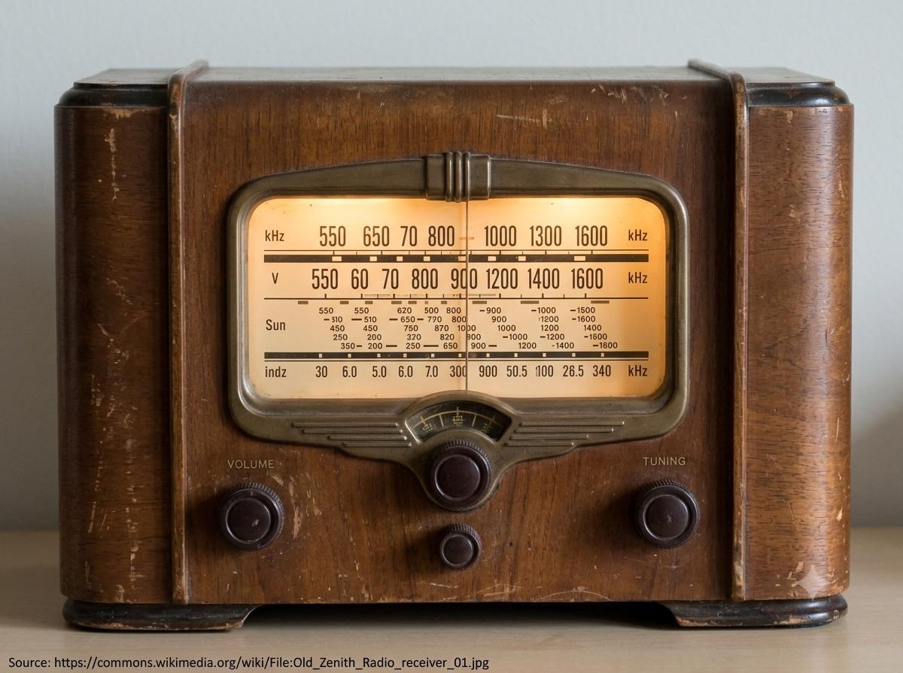

Chapter 08 · It All Comes Together
How a Radio Works
Every part in this book shows up here. An LC tank tunes to one station out of hundreds sharing the air; a diode strips the audio back out of the radio wave; a transistor (or, historically, a triode) makes the whole thing loud enough to hear.
Step 1 — Tune: the LC circuit picks one frequency
Every station broadcasts at a different carrier frequency. An antenna coil (L) paired with a variable capacitor (C) forms a tuned circuit whose resonant frequency is f = 1/(2π√(LC)) (Chapter 04). Turning the tuning dial changes C, which shifts the circuit's resonant peak until it lines up with one station and rejects the rest.
Step 2 — Detect: a diode recovers the audio
An AM (amplitude-modulated) carrier is a fast radio-frequency wave whose height (envelope) is shaped by the slower audio signal. A diode (Chapter 05) rectifies that wave — keeping only the half above zero — and a small RC filter (Chapter 03) smooths the choppy result into the envelope itself: the recovered audio.
Step 3 — Amplify: bring it up to speaker volume
The recovered audio is faint, so one or more transistor amplifier stages (Chapter 07) — historically, triode stages (Chapter 06) — boost it enough to drive a speaker or headphones.

A real photograph (not an illustration) of a vintage tube-era radio receiver with its tuning dial visible, or alternatively a simple crystal radio set. Prefer a free-licensed photo from Wikimedia Commons (search "vintage radio receiver" or "crystal radio set"); when dropped in, replace the "Source:" line below with the real Commons file page URL, in small font. Target size ~1200×900px, 4:3, subject centred with safe margins — letterboxed into a 4:3 box.
Generate or source this image, then drop the file here.